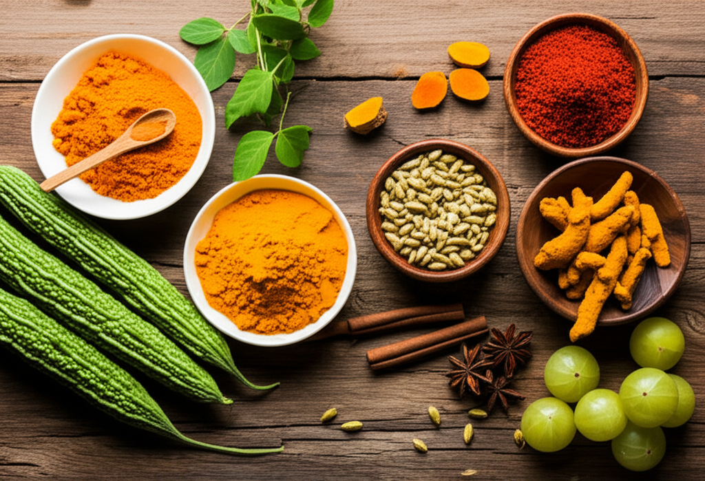

🥗 FREE: 7-Day Indian Diabetic Meal Plan — Breakfast, lunch, dinner + snacks with exact portions and GI values. Download Now →
20 Best Indian Foods to Lower Blood Sugar Naturally (2026 Guide)

Your grandmother's kitchen already has the most powerful anti-diabetic foods. Here's what modern science says about methi, karela, jamun, and 17 more Indian superfoods — with exact dosages, best timing, and simple recipes.
⚡ Key Takeaways
- Methi seeds reduce fasting blood sugar by 13-25% in clinical studies
- Karela (bitter gourd) contains plant insulin that mimics the real thing
- Jamun seeds can lower blood sugar by up to 30% when taken regularly
- Dalchini (cinnamon) improves insulin sensitivity by 10-29%
- Combining 3-4 of these foods daily can reduce HbA1c by 0.5-1.0%
India is the diabetes capital of the world with over 101 million diagnosed cases. Yet ironically, our traditional Indian kitchen contains some of the most powerful natural blood sugar regulators known to science.
The problem? Most Indians have abandoned traditional foods for processed alternatives. White bread replaced roti. Packaged juices replaced fresh amla. Sugar-laden biscuits replaced homemade snacks.
This guide brings you back to what works. Every food listed here has peer-reviewed clinical evidence supporting its blood sugar lowering properties. No miracle cures — just real foods, real science, and practical ways to include them in your daily meals.
⚠️ Important: These foods complement your diabetes treatment — they don't replace medication. Never adjust your medication without consulting your doctor. If you're on insulin or sulfonylureas, adding multiple blood sugar lowering foods simultaneously could cause hypoglycemia.
1. Why Indian Foods Are Uniquely Powerful for Diabetes
India's traditional food system evolved over thousands of years in a carbohydrate-rich diet culture. Our ancestors unknowingly paired high-glycemic staples (rice, wheat) with ingredients that blunt blood sugar spikes:
- Turmeric in every curry — anti-inflammatory, improves insulin sensitivity
- Ghee on roti — fat slows carbohydrate absorption
- Dal with rice — protein + fiber reduces glycemic response by 20-30%
- Curd/raita — probiotics improve glucose metabolism
- Methi in paratha — soluble fiber creates a gel that slows sugar absorption
Modern research confirms what Ayurveda knew: the Indian thali system — with its balance of grains, lentils, vegetables, fermented foods, and spices — is one of the best dietary frameworks for blood sugar management. The key is going back to its original, unprocessed form.
2. Top 10 Indian Spices & Seeds for Blood Sugar Control
1. Methi (Fenugreek) Seeds — The Gold Standard 🥇
How it works: Methi contains 4-hydroxyisoleucine, an amino acid that directly stimulates insulin secretion. Its soluble fiber (galactomannan) forms a gel in the stomach, slowing carbohydrate digestion.
- Evidence: A meta-analysis of 10 clinical trials found methi reduces fasting blood sugar by 17.64 mg/dL and HbA1c by 0.85% (Gong et al., Nutrients 2020)
- Dosage: 5-10g soaked seeds on empty stomach, or 2.5-5g powder in warm water
- Best timing: Morning, 30 minutes before breakfast
- Recipe: Soak 1 tbsp seeds in water overnight. Drink water + chew seeds before breakfast
2. Dalchini (Cinnamon) — The Insulin Sensitizer
How it works: Cinnamon's polyphenols (especially methylhydroxychalcone polymer) activate insulin receptors, helping cells absorb glucose more efficiently.
- Evidence: 1-6g daily reduces fasting blood sugar by 18-29% (Khan et al., Diabetes Care)
- Dosage: 1-3g (½ tsp) Ceylon cinnamon powder daily
- Best timing: With meals or in morning chai (without sugar!)
- Tip: Use Ceylon cinnamon (not Cassia) — Cassia contains coumarin which can harm the liver at high doses
3. Haldi (Turmeric) — The Inflammation Fighter
How it works: Curcumin reduces insulin resistance by lowering inflammatory markers (TNF-α, IL-6) and improving beta cell function.
- Evidence: A 9-month study showed curcumin prevented prediabetes from progressing to Type 2 in 100% of participants vs. 16.4% progression in placebo (Chuengsamarn et al., Diabetes Care 2012)
- Dosage: 1-2g turmeric powder daily (with black pepper for absorption)
- Best timing: With meals — the fat in food improves curcumin absorption
- Recipe: Golden milk — warm milk + 1 tsp haldi + pinch of black pepper + no sugar
4. Jeera (Cumin) — The Metabolic Booster
How it works: Cumin stimulates pancreatic enzyme production and improves glycogen storage in the liver.
- Evidence: 3g cumin powder daily for 8 weeks reduced fasting blood sugar by 21% in Type 2 diabetics
- Dosage: 2-3g powder or 1 tsp whole seeds daily
- Recipe: Jeera water — boil 1 tsp in water, strain, drink warm in the morning
5. Ajwain (Carom Seeds) — The Digestive Regulator
How it works: Contains thymol which improves enzyme secretion and slows starch digestion.
- Evidence: Animal studies show significant blood sugar reduction; human trials ongoing
- Dosage: 1-2g with warm water after meals
- Tip: Particularly effective for post-meal sugar spikes
6. Kalonji (Nigella Seeds) — The Black Seed Powerhouse
How it works: Thymoquinone in kalonji improves insulin secretion and reduces intestinal glucose absorption.
- Evidence: 2g daily for 12 weeks reduced fasting blood sugar by 45 mg/dL and HbA1c by 1.52% (Bamosa et al., 2010)
- Dosage: 1-2g crushed seeds or ½ tsp oil daily
- Recipe: Add to raita, sprinkle on salads, or mix with honey (small amount)
7. Alsi (Flaxseeds) — The Omega-3 Regulator
How it works: High in soluble fiber and alpha-linolenic acid (ALA), which improves insulin sensitivity.
- Evidence: 10g flaxseed powder daily reduced fasting glucose by 19.7% over 1 month
- Dosage: 10-15g (1 tbsp) ground flaxseed daily
- Tip: Must grind before eating — whole seeds pass undigested. Store ground flax in fridge
8. Curry Leaves (Kadi Patta) — The South Indian Secret
How it works: Alkaloids (mahanimbine) in curry leaves stimulate insulin-producing beta cells.
- Evidence: Reduces blood glucose, triglycerides, and LDL cholesterol in diabetic patients
- Dosage: 8-10 fresh leaves daily on empty stomach, or dried powder in food
- Tip: Don't discard curry leaves from your food — eat them!
9. Tej Patta (Bay Leaves) — The Hidden Gem
How it works: Polyphenols in bay leaves improve insulin receptor function.
- Evidence: 1-3g daily for 30 days reduced blood glucose by 21-26% and improved cholesterol (Khan et al., 2009)
- Dosage: 1-2 leaves in dal/curry daily, or 1g powdered in warm water
10. Chia Seeds — The Modern Addition
How it works: Extremely high in soluble fiber — forms a gel that dramatically slows sugar absorption.
- Evidence: Reduces post-meal blood sugar by 39% when added to meals
- Dosage: 15-20g (1.5 tbsp) soaked in water for 15 minutes, then consume
- Recipe: Add to curd, smoothies, or make chia pudding with unsweetened almond milk
3. Top 10 Indian Vegetables & Fruits for Blood Sugar
11. Karela (Bitter Gourd) — Nature's Insulin 🏆
How it works: Contains three active compounds — charantin, vicine, and polypeptide-p — that mimic insulin and help cells absorb glucose.
- Evidence: 2,000mg daily reduced fructosamine levels (4-week blood sugar marker) significantly in clinical trials
- Dosage: 50-100ml fresh juice or 1 serving cooked karela, 3-4 times per week
- Recipe: Karela chips — slice thin, sprinkle salt + turmeric, air-fry until crispy
- Tip: To reduce bitterness, soak sliced karela in salt water for 30 minutes before cooking
12. Jamun (Java Plum) — The Diabetic's Fruit
How it works: Jamboline in jamun seeds converts starch to energy, preventing sugar buildup. The fruit itself has a very low glycemic index.
- Evidence: Jamun seed powder (5g twice daily) reduced blood sugar by 30% in multiple studies
- Dosage: 100g fresh fruit in season, or 3-5g dried seed powder year-round
- Availability: Fresh in summer (June-August). Dried seed powder available year-round at ayurvedic stores
13. Amla (Indian Gooseberry) — The Vitamin C Bomb
How it works: Contains chromium which regulates carbohydrate metabolism and makes cells more responsive to insulin.
- Evidence: 1-3g amla powder daily reduces fasting and post-meal blood sugar significantly
- Dosage: 1-2 fresh amla daily, or 3-6g powder/1 tbsp juice
- Recipe: Amla + karela juice — blend 1 amla + ½ karela + ginger + water. Drink before breakfast
14. Lauki (Bottle Gourd) — The Low-GI Staple
How it works: Very low in calories and carbs, high in water and fiber. Helps maintain blood sugar without spikes.
- Dosage: 200-300g cooked, as part of regular meals
- Recipe: Lauki ka raita, lauki kofta (baked), or plain lauki sabzi with minimal oil
15. Bhindi (Okra/Lady's Finger) — The Fiber Star
How it works: Myricetin in bhindi improves blood sugar absorption. Its mucilage (the slimy texture) is actually soluble fiber that slows sugar absorption.
- Evidence: Okra water (soaking cut okra overnight) reduced blood sugar in multiple studies
- Dosage: 6-8 bhindi per serving, 3-4 times per week
- Tip: Don't overcook — light stir-fry preserves more nutrients than deep-frying
16. Palak (Spinach) — The Magnesium Source
How it works: Rich in magnesium (deficiency is common in diabetics) and alpha-lipoic acid, both of which improve insulin sensitivity.
- Evidence: High magnesium intake reduces Type 2 diabetes risk by 15% per 100mg/day increase
- Dosage: 100-200g cooked spinach, 4-5 times per week
- Recipe: Palak dal, palak paneer (with less cream), or green smoothie with palak + amla
17. Dahi (Curd/Yogurt) — The Probiotic Regulator
How it works: Probiotics in dahi improve gut microbiome diversity, which directly affects glucose metabolism and insulin sensitivity.
- Evidence: Daily yogurt consumption reduces Type 2 diabetes risk by 14% (Hu et al., BMC Medicine)
- Dosage: 200ml homemade curd daily (unsweetened)
- Tip: Homemade dahi has more diverse probiotics than commercial yogurt. Set with previous day's culture
18. Drumstick (Moringa/Sahjan) — The Nutrient Dense Champion
How it works: Isothiocyanates in moringa reduce insulin resistance. Leaves contain chlorogenic acid which regulates blood sugar.
- Evidence: 7g moringa leaf powder daily for 3 months reduced fasting blood sugar by 13.5% and HbA1c by 0.4%
- Dosage: 6-7g leaf powder daily, or drumstick in sambar/curry 3-4 times per week
- Recipe: Add moringa powder to morning dosa/idli batter, or make drumstick sambar
19. Guava (Amrood) — The Low-Sugar Fruit
How it works: Very low GI (12-24), extremely high in fiber and vitamin C. The peel contains the most blood sugar lowering compounds.
- Evidence: Guava leaf tea reduced post-meal blood sugar by 20% in clinical trials
- Dosage: 1 medium guava daily (eat with peel), or guava leaf tea
- Tip: Best diabetic-friendly fruit available in India year-round
20. Green Moong Dal — The Perfect Protein
How it works: Low GI (31), high protein, rich in fiber. Slows glucose absorption when paired with rice or roti.
- Evidence: Regular pulse consumption (lentils, beans) reduces HbA1c by 0.5% over 3 months
- Dosage: 1-2 servings of moong dal daily
- Recipe: Moong dal cheela (savory pancake) for breakfast — protein-rich, low GI, filling
📚 Like this guide? We are writing the complete Diabetes Management Book for India!
Get notified + free chapter →🍛 Free 7-Day Indian Diabetic Meal Plan — breakfast to dinner, all Indian recipes
Download Free →4. Sample Daily Plan: How to Include These Foods
🌅 Morning Routine (Empty Stomach)
- Soaked methi seeds (1 tbsp) + methi water
- Jeera water or amla juice
- 8-10 curry leaves
🍳 Breakfast (8:00-9:00 AM)
- Moong dal cheela with pudina chutney
- OR: Oats upma with vegetables + flaxseed powder
- Sprinkle dalchini in chai (no sugar)
🥗 Mid-Morning Snack (11:00 AM)
- 1 guava or handful of jamun (in season)
- OR: Handful of roasted chana + kalonji
🍲 Lunch (1:00 PM)
- ½ cup brown rice + moong/toor dal + palak sabzi + dahi
- Include haldi, curry leaves, tej patta in cooking
- 1 tsp ghee on rice (slows glycemic response)
🫖 Evening Snack (4:00 PM)
- Green tea or moringa tea
- Roasted makhana (fox nuts) with black pepper
🍛 Dinner (7:00-7:30 PM)
- 2 multigrain roti + karela sabzi or bhindi + raita
- Ajwain water after dinner
🌙 Before Bed
- Golden milk (haldi + warm milk + black pepper, no sugar)
5. Indian Foods That Spike Blood Sugar (Limit or Avoid)
| Food | GI Score | Better Alternative |
|---|---|---|
| White rice (polished) | 70-73 | Brown rice / Hand-pounded rice (GI 50) |
| White bread / Pav | 75 | Multigrain roti (GI 45) |
| Potato (boiled) | 78 | Sweet potato (GI 44) or cauliflower |
| Mango | 56 | Guava (GI 12) or papaya (small portion) |
| Fruit juice | 65+ | Whole fruit (fiber intact) |
| Mithai / Sweets | 65-80 | Dates (1-2) or dark chocolate (85%+) |
| Packaged namkeen | 60-70 | Roasted makhana or chana |
6. Track Your Personal Response with CGM
Here's the truth: everyone responds differently to food. Your friend might handle rice fine while it spikes your sugar. The only way to know for sure is to track your personal glucose response.
A Continuous Glucose Monitor (CGM) like Freestyle Libre or Dexcom shows your blood sugar in real-time, revealing exactly which foods work for YOU. Even 2 weeks of CGM data can transform your diet forever.
📊 Want AI-Powered Glucose Insights?
Health Gheware analyzes your CGM data with AI — identifying which Indian foods lower YOUR blood sugar and which ones spike it. Personalized, data-driven, made for India.
Try Health Gheware Free →7. Frequently Asked Questions
Which Indian food reduces blood sugar the fastest?
Methi (fenugreek) seeds soaked overnight and consumed on an empty stomach can reduce fasting blood sugar by 13-25% within 2-4 weeks. Karela (bitter gourd) juice before meals also shows rapid results, lowering post-meal glucose by 15-30% within the first week.
Can I control diabetes with Indian diet alone?
For Type 2 diabetes caught early (within 5-6 years of diagnosis), dietary changes combined with exercise can achieve remission in up to 46% of cases. However, never stop medication without consulting your doctor. Indian foods can complement your treatment plan and may help reduce medication dosage over time.
How much methi seeds should a diabetic eat daily?
Research shows 5-10 grams (1-2 teaspoons) of methi seeds soaked overnight and consumed on an empty stomach is effective. Start with 5g and increase gradually. Some people also use methi powder (2.5-5g) mixed in warm water.
Is rice bad for diabetics in India?
White rice has a high glycemic index (GI 70-73) and can spike blood sugar. However, you don't need to eliminate it completely. Switch to brown rice, hand-pounded rice, or red rice (GI 50-55). Limit portions to ½ cup cooked, pair with dal and vegetables, and add 1 tsp ghee to lower the glycemic response.
What Indian fruits are safe for diabetics?
Best fruits: jamun (java plum), amla (Indian gooseberry), guava, papaya (small portions), and green apples. Eat them whole (not juiced), in moderate portions, and preferably in the morning or as a mid-meal snack. Avoid mango, chikoo, grapes, and banana in large quantities.
Related Articles
- Diabetes Cure Research 2026: Latest Breakthroughs & Current Status
- How Ayurveda Treats Type 2 Diabetes: Evidence-Based Guide
- Coffee & Blood Sugar: What 3 Cups Really Does
- Stress & Cortisol: The Hidden Blood Sugar Saboteur
💬 Which of these Indian foods has helped YOUR blood sugar the most? Methi, karela, or something else?
Share your experience in the comments below!
📅 Content Last Reviewed: February 2026
Medical information is reviewed quarterly to ensure accuracy. If you notice outdated information, please contact us.
🎁 Before You Go...
Get our FREE 7-Day Indian Diabetic Meal Plan — complete with breakfast, lunch, dinner, and snacks designed around these blood sugar lowering foods!
Includes exact portions, GI values, and grocery list.
Download Free Meal Plan →